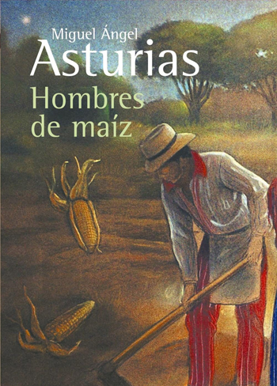

Hombres de maíz
Hombres de maíz es una novela del escritor guatemalteco y
premio Nobel de Literatura Miguel Ángel Asturias,
publicada en el año 1949. Su título hace
referencia a un mito del Popol Vuh,
uno de los libros sagrados de los mayas.
La novela Hombres de maíz, que se considera a
veces como su obra maestra, es una defensa de la cultura maya.
Asturias sintetiza su amplio conocimiento de las creencias
mayas con sus convicciones políticas para canalizar
ambas hacia una vida de compromiso y solidaridad.
Si deseas leer el libro "Hombres de maíz"
puedes hacerlo aquí
¡Espero que te guste!